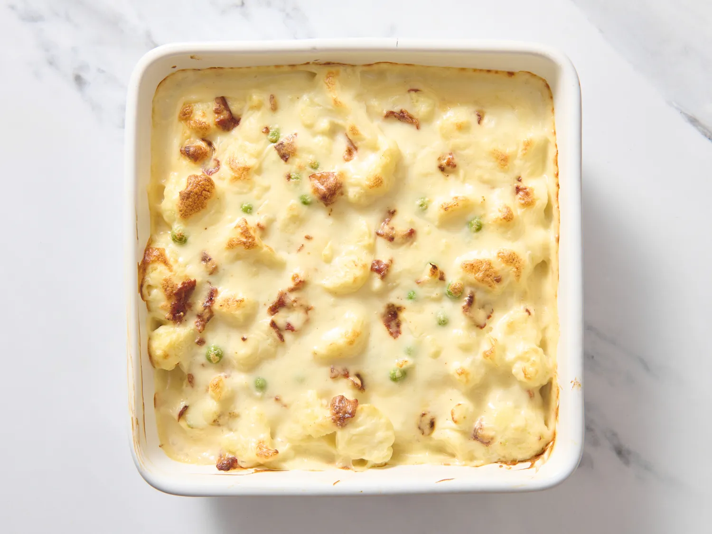

Cauliflower Alfredo Bake

Description
This creamy, savory 4-ingredient cauliflower Alfredo bake is an easy side dish that will go very well with almost
any main entree, whether pork tenderloin, grilled chicken breast, or cooked salmon.
Ingredients
- 1 pound cauliflower florets
- 1 (15 ounce) jar Alfredo sauce
- 1/4 cup fresh peas
- 4 strips bacon, cooked and crumbled
Steps
- Gather all ingredients. Preheat the oven to 425 degrees F (220 degrees C).
- Bring a large pot of salted water to a boil. Add cauliflower florets and cook for just 3 minutes. Drain.
- Transfer cauliflower to a greased 8x8-inch casserole dish. Pour Alfredo sauce over cauliflower. Sprinkle with
peas and chopped bacon. Stir to combine.
- Bake uncovered until cauliflower is tender and sauce is bubbly, 25 to 30 minutes. Serve immediately.